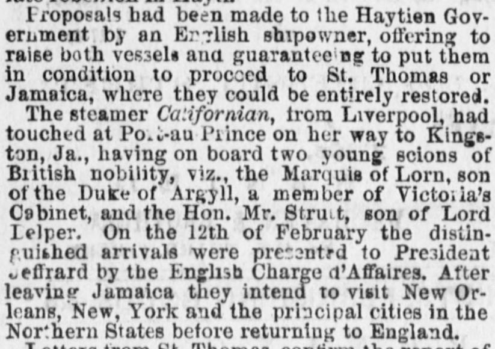
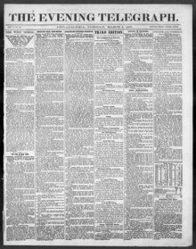

The steamer Californian, trora Liverpool, had touched at Po.ii-au Piince on her way to Kings tonEl vapor Californian, procedente de Liverpool, había tocado en Port-au-Prince en
The Evening Telegraph. Philadelphia [Pa.], March 6, 1866. Page 1. View the originalVer el original


See the full pageVer la página completaThe newspaper reported that Salnave and other Haitian refugees were in St. Domingo city, where they were either restricted to city limits or confined in a tower and facing execution. Additionally, President Baez was encountering significant difficulty restoring order, having arrested several Dominican leaders implicated in Luperon's recent revolution against his government. Finally, the new government under Baez had not yet been recognized by Haiti because official notification of the change had not been made.El rotativo reportó que Salnave y otros asilados haitianos se hallaban en la ciudad de Santo Domingo, donde se encontraban confinados dentro del perímetro urbano o recluidos en una torre bajo riesgo de ser pasados por las armas. Además, el presidente Báez tropezaba con notorias dificultades para restablecer el orden, tras haber encarcelado a varios caudillos dominicanos comprometidos en la reciente revolución de Luperón contra su régimen. Por último, la nueva administración de Báez aún no había obtenido el reconocimiento de Haití debido a la falta de notificación oficial sobre la mutación política.
FULL TEXT:TEXTO COMPLETO:
Proposals had been made to the Haytien Government by an English shipowner, offering to raise both vessels and guaranteeing to put them in condition to proceed to St. Thomas or Jamaica, where they could be entirely restored.Se habían hecho propuestas al Gobierno haitiano por un armador inglés, ofreciendo reflotar ambos buques y garantizando ponerlos en condiciones de dirigirse a Santo Tomás o Jamaica, donde podrían ser enteramente restaurados.
The steamer Californian, from Liverpool, had touched at Port-au-Prince on her way to Kingston, Ja., having on board two young scions of British nobility, viz., the Marquis of Lorn, son of the Duke of Argyll, a member of Victoria's Cabinet, and the Hon. Mr. Strutt, son of Lord Belper. On the 12th of February the distinguished arrivals were presented to President Jeffrard by the English Charge d'Affaires. After leaving Jamaica they intend to visit New Orleans, New York and the principal cities in the Northern States before returning to England.El vapor Californian, procedente de Liverpool, había tocado en Puerto Príncipe en su travesía hacia Kingston, Jamaica, teniendo a bordo a dos jóvenes vástagos de la nobleza británica, a saber, el marqués de Lorn, hijo del duque de Argyll, miembro del Gabinete de Victoria, y el honorable Sr. Strutt, hijo de Lord Belper. El 12 de febrero los distinguidos viajeros fueron presentados al presidente Jeffrard por el encargado de negocios inglés. Después de salir de Jamaica se proponen visitar Nueva Orleans, Nueva York y las principales ciudades de los Estados del Norte antes de regresar a Inglaterra.